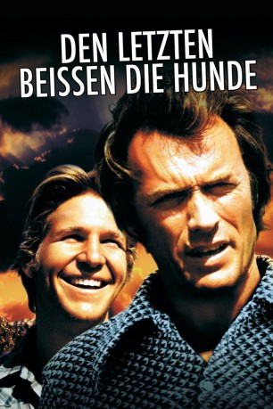

#5798 Die Letzten beißen die Hunde
Alternativ: Thunderbolt and Lightfoot
Auszeichnungen: für 1 Oscars nominiert
 
 IMDB-Wertung: 7.1 / 10
IMDB-Wertung: 7.1 / 10  Metascore: 0
Metascore: 0 
Dieb Thunderbolt, der sich als Pfarrer verborgen hält, wird von der Kanzel gejagt, als die ehemaligen Komplizen Red und Goody auftauchen, die die Beute aus einem gemeinsamen Banküberfall suchen. Thunderbolt freundet sich auf der Flucht mit dem jungen Lightfoot an. Sie überfallen eine Bank, die Polizei verfolgt sie. Goody wird erschossen, Red kracht mit dem Wagen in in einen Laden und wird von Wachhunden zerfleischt. Thunderbolt führt Lightfoot zum Versteck der Beute. Der verwundete Lightfoot stirbt an seiner Seite auf dem Highway.
Jahr: 1974
Dauer: 114 Minuten
FSK: 16
Land: USA Studio: United ArtistsTonspuren:
Untertitel: Deutsch, Englisch,
Auflösung: 1080p (1920x816) Größe: 8550 MB
Genre: Drama, Komödie, Krimi
Regisseur: Michael Cimino
Drehbuch: Sean Mewshaw
Soundtrack:
Darsteller:
 Clint Eastwood als Thunderbolt
Clint Eastwood als Thunderbolt Jeff Bridges als Lightfoot
Jeff Bridges als Lightfoot George Kennedy als Red Leary
George Kennedy als Red Leary Geoffrey Lewis als Eddie Goody
Geoffrey Lewis als Eddie Goody- Catherine Bach als Melody
 Gary Busey als Curly
Gary Busey als Curly- Jack Dodson als Vault Manager
 Roy Jenson als Dunlop
Roy Jenson als Dunlop Bill McKinney als Crazy Driver
Bill McKinney als Crazy Driver Vic Tayback als Mario Pinski
Vic Tayback als Mario Pinski Dub Taylor als Station Attendant
Dub Taylor als Station Attendant Gregory Walcott als Used Car Salesman
Gregory Walcott als Used Car Salesman Stuart Nisbet als Couple at Station
Stuart Nisbet als Couple at Station- Merv Griffin als Himself , archive footage, uncredited
- Beth Howland als Vault Manager's Wife , uncredited
- Eugene Elman als Tourist
 Burton Gilliam als Welder
Burton Gilliam als Welder- Claudia Lennear als Secretary
- Erica Hagen als Waitress
- Alvin Childress als Janitor
- Virginia Baker als Couple at Station
- Irene K. Cooper als Cashier
- Cliff Emmich als The Fat Man
- June Fairchild als Gloria
- Ted Foulkes als Young Boy
- Leslie Oliver als Teenager
- Mark Montgomery als Teenager
- Karen Lamm als Girl on Motorcycle
- Luanne Roberts als Suburban Housewife
- Lila Teigh als Tourist
- David Chow als Kung-Fu Master , uncredited
- Steve Moriarty als Cop with Shotgun in Final Shootout , uncredited
Datei: X:\1974\Letzten beißen die Hunde, Die (1974, FSK16, 1920x816).mkv seit 22.03.2017
Festplatte: HD 1971-1979
 Es gibt insgesamt 33 Filme in der Gruppe '1974'
Es gibt insgesamt 33 Filme in der Gruppe '1974'